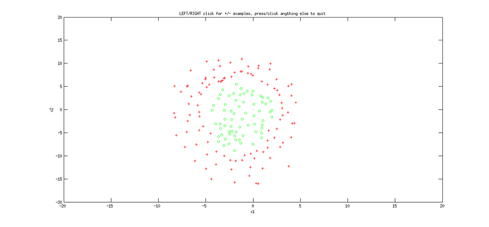
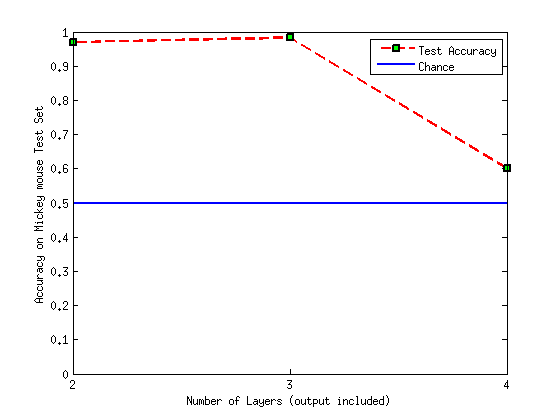
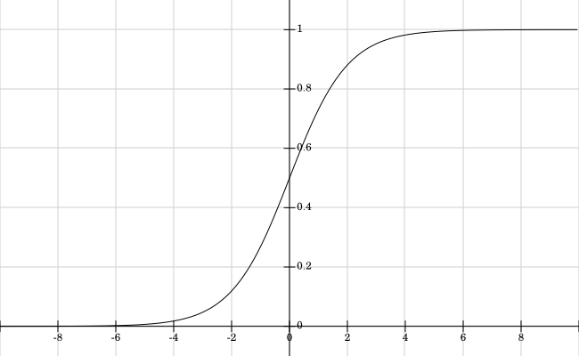
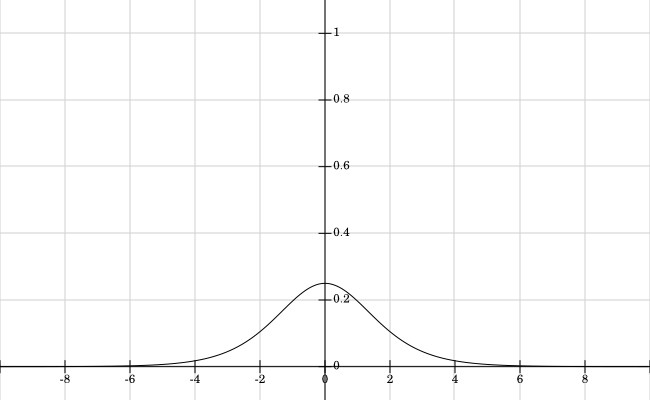

Neural Network Architecture Design
I'm playing around with Neural Networks trying to understand the best practices for designing their architecture based on the kind of problem you need to solve.
I generated a very simple data set composed of a single convex region as you can see below:

Everything works fine when I use an architecture with L = 1, or L = 2 hidden layers (plus the output layer), but as soon as I add a third hidden layer (L = 3) my performance drops down to slightly better than chance.
I know that the more complexity you add to a network (number of weights and parameters to learn) the more you tend to go towards over-fitting your data, but I believe this is not the nature of my problem for two reasons:
- my performance on the Training set is also around 60% (whereas over-fitting typically means you have a very low training error and high test error),
- and I have a very large amount of data examples (don't look at the figure that's only a toy figure I uplaoded).
Can anybody help me understand why adding an extra hidden layer gives me this drop in performances on such a simple task?
Here is an image of my performance as a function of the number of layers used:

ADDED PART DUE TO COMMENTS:
- I am using a sigmoid functions assuming values between 0 and 1,
L(s) = 1 / 1 + exp(-s) - I am using early stopping (after 40000 iterations of backprop) as a criteria to stop the learning. I know it is not the best way to stop but I thought that it would ok for such a simple classification task, if you believe this is the main reason I'm not converging I I might implement some better criteria.
Answer
At least on the surface of it, this appears to be a case of the so-called "vanishing gradient" problem.
Activation functions
Your neurons activate according to the logistic sigmoid function, f(x) = 1 / (1 + e^-x) :

This activation function is used frequently because it has several nice properties. One of these nice properties is that the derivative of f(x) is expressible computationally using the value of the function itself, as f'(x) = f(x)(1 - f(x)). This function has a nonzero value for x near zero, but quickly goes to zero as |x| gets large :

Gradient descent
In a feedforward neural network with logistic activations, the error is typically propagated backwards through the network using the first derivative as a learning signal. The usual update for a weight in your network is proportional to the error attributable to that weight times the current weight value times the derivative of the logistic function.
delta_w(w) ~= w * f'(err(w)) * err(w)
As the product of three potentially very small values, the first derivative in such networks can become small very rapidly if the weights in the network fall outside the "middle" regime of the logistic function's derivative. In addition, this rapidly vanishing derivative becomes exacerbated by adding more layers, because the error in a layer gets "split up" and partitioned out to each unit in the layer. This, in turn, further reduces the gradient in layers below that.
In networks with more than, say, two hidden layers, this can become a serious problem for training the network, since the first-order gradient information will lead you to believe that the weights cannot usefully change.
However, there are some solutions that can help ! The ones I can think of involve changing your learning method to use something more sophisticated than first-order gradient descent, generally incorporating some second-order derivative information.
Momentum
The simplest solution to approximate using some second-order information is to include a momentum term in your network parameter updates. Instead of updating parameters using :
w_new = w_old - learning_rate * delta_w(w_old)
incorporate a momentum term :
w_dir_new = mu * w_dir_old - learning_rate * delta_w(w_old) w_new = w_old + w_dir_new
Intuitively, you want to use information from past derivatives to help determine whether you want to follow the new derivative entirely (which you can do by setting mu = 0), or to keep going in the direction you were heading on the previous update, tempered by the new gradient information (by setting mu > 0).
You can actually get even better than this by using "Nesterov's Accelerated Gradient" :
w_dir_new = mu * w_dir_old - learning_rate * delta_w(w_old + mu * w_dir_old) w_new = w_old + w_dir_new
I think the idea here is that instead of computing the derivative at the "old"
parameter value w, compute it at what would be the "new" setting for w if
you went ahead and moved there according to a standard momentum term. Read
more in a neural-networks context here (PDF).
Hessian-Free
The textbook way to incorporate second-order gradient information into your neural network training algorithm is to use Newton's Method to compute the first and second order derivatives of your objective function with respect to the parameters. However, the second order derivative, called the Hessian matrix, is often extremely large and prohibitively expensive to compute.
Instead of computing the entire Hessian, some clever research in the past few years has indicated a way to compute just the values of the Hessian in a particular search direction. You can then use this process to identify a better parameter update than just the first-order gradient.
You can learn more about this by reading through a research paper (PDF) or looking at a sample implementation.
Others
There are many other optimization methods that could be useful for this task -- conjugate gradient (PDF -- definitely worth a read), Levenberg-Marquardt (PDF), L-BFGS -- but from what I've seen in the research literature, momentum and Hessian-free methods seem to be the most common ones.
Suggest
Because the number of iterations of training required for convergence increases as you add complexity to a neural network, holding the length of training constant while adding layers to a neural network will certainly result in you eventually observing a drop like this. To figure out whether that is the explanation for this particular observation, try increasing the number of iterations of training that you're using and see if it improves. Using a more intelligent stopping criterion is also a good option, but a simple increase in the cut-off will give you answers faster.